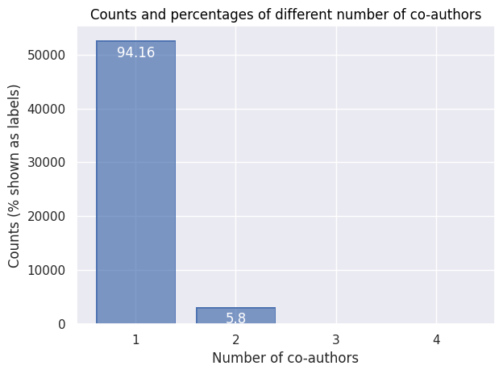

This section determines how frequent co-authorship is in the dataset. This is based on the number of names found within the “authors” element. For a comparison with co-editorship, see the section Co-editors.
Code
def get_coauthors(bibdata): """ Extracts the authorship information from the data. """# First, find all lists of authors xpath ="//bib:authors" authors = bibdata.xpath(xpath, namespaces=namespaces)print("There are "+str(len(authors)) +" publications with a list of one or several authors in the dataset.")# Then, for each publication, get the list of authors (first and last name) coauthors = [] xpath_lastname =".//foaf:surname/text()" xpath_firstname =".//foaf:givenName/text()"for item in authors: lastnames = item.xpath(xpath_lastname, namespaces=namespaces) firstnames = item.xpath(xpath_firstname, namespaces=namespaces) fullnames = []for last, first inzip(lastnames, firstnames): full = last +"_"+ first fullnames.append(full)if fullnames: coauthors.append(fullnames)return coauthorscoauthors = get_coauthors(bibdata)
There are 56839 publications with a list of one or several authors in the dataset.
As the next step, we want to see how many authors publications in the bibliography typically have, expressed both in counts and in percentages. The table below shows the results.
Code
def get_coauthordata(coauthors): # Get count of coauthor numbers count_coauthors = Counter([len(item) for item in coauthors])# Turn into a dataframe coauthordata = pd.DataFrame.from_dict( count_coauthors, orient="index", columns=["count"])# Calculate percentages coauthors_sum = np.sum(coauthordata["count"]) coauthordata["percentage"] = np.round(np.multiply(coauthordata["count"] / coauthors_sum, 100), 2)# Prettify the DataFrame coauthordata["number"] = coauthordata.index coauthordata = coauthordata.sort_values(by="number") coauthordata = coauthordata[['number', 'count', 'percentage']] display(HTML(coauthordata.to_html(index=False)))return coauthordatacoauthordata = get_coauthordata(coauthors)
number
count
percentage
1
52635
94.16
2
3244
5.80
3
13
0.02
4
5
0.01
Of course, we can also display these results as a bar chart, for easier visual inspection (and comparison to the barchart in the Co-editor section.)
Code
def visualize_coauthordata(coauthordata): """ Create a simple bar plot that shows the percentage of each count of co-authors in the dataset. """import seaborn.objects as so ( so.Plot(data=coauthordata, x="number", y="count", text="percentage") .add(so.Bar()) .add(so.Text(color="w", valign="top", offset=5)) .scale(x=so.Continuous().tick(every=1)) .label( x="Number of co-authors", y="Counts (% shown as labels)", title ="Counts and percentages of different number of co-authors") .save("figures/coauthor-percentages.png", dpi=300) .show() )visualize_coauthordata(coauthordata)

Regarding authorship (of books, articles and chapters), the figure above shows that single authorship is clearly the norm in this dataset (with around 94% of the cases). The remaining 6% are alsmost all cases of dual authorship, with a rare exceptions of triple or more authorship.
In contrast, when looking at editorship, joint editorship with two editors is the most common case (around 42%), closely followed by single editorship (almost 40%). Triple co-editorship is rarer, but not uncommon (at around 14%).
Coauthor pairs
Even if coauthorship is comparatively rare, we can still try to build a network of co-authors. The table below shows the people most frequently authoring a publication jointly.
Code
import warningsimport pandas as pdfrom pandas.core.common import SettingWithCopyWarningwarnings.simplefilter(action="ignore", category=SettingWithCopyWarning)def network_coauthors(coauthordata): """ Builds the network of people having collaborated as authors. """# Filter out the single author data coauthors = [item for item in coauthordata iflen(item) >1]# Establish the count of each collaboration between authorsimport itertools all_coauthor_combinations = []for item in coauthors: coauthors_combinations =list(itertools.combinations(item, 2)) coauthors_combinations = [tuple(sorted(item)) for item in coauthors_combinations]for coauthcomb in coauthors_combinations: all_coauthor_combinations.append(coauthcomb) cac =dict(Counter(all_coauthor_combinations)) # ccc = coeditor_combinations_count# Transform to a DataFrame cac = pd.DataFrame.from_dict(cac, orient="index", columns=["count"]) cac = cac.reset_index() cac_split = pd.DataFrame(cac["index"].tolist()) cac_merged = cac_split.merge(cac, left_index=True, right_index=True) cac = cac_merged.drop(["index"], axis=1) cac = cac.rename({0 : "coauthor1", 1 : "coauthor2"}, axis=1) cac = cac.sort_values(by="count", ascending=False) display(HTML(cac.head(15).to_html(index=False)))return caccac = network_coauthors(coauthors)
coauthor1
coauthor2
count
Albertan_Christian
Chouillet_Anne-Marie
22
Desberg_Stephen
Marini_Enrico
15
Berchtold_Jacques
Porret_Michel
12
Cabane_Franck
Chouillet_Anne-Marie
10
Boussuge_Emmanuel
Launay_Françoise
9
Hourcade_Philippe
Vinha_Mathieu Da
9
Brown_Andrew
Kölving_Ulla
8
Chouillet_Anne-Marie
Loty_Laurent
8
Adelson_Robert
Letzter_Jacqueline
7
Lüsebrink_Hans-Jürgen
Reichardt_Rolf
7
Bonpland_Aimé
von Humboldt_Alexander
7
Pastoureau_Michel
Wagman_Mathilde
7
Gengembre_Gérard
Goldzink_Jean
7
Chouillet, Anne-Marie_Irène Passeron
Prin_François
6
McKenna_Antony
Mori_Gianluca
6
Co-author networks
Based on the coauthor pairs, we can now build a network visualisation.
Code
def create_plot(cac, topn): """ Plot the co-editor data as a network using pyvis. """# Filter the dataset # Determine the top N most frequent co-editors coauthors_top =list(set(list(cac.head(topn).loc[:,"coauthor1"]) +\list(cac.head(topn).loc[:,"coauthor2"])))print("Among all authors, "+str(len(coauthors_top)) +" have been selected as the most active co-authors.")# Filter the DataFrame to include just the collaborations involving at least one of the top co-authors. # The resulting DataFrame will have all collaborations between the top co-editors and their co-authors. cac = cac[(cac["coauthor1"].isin(coauthors_top)) |\ (cac["coauthor2"].isin(coauthors_top))]# Simplify the labels cac.loc[:,'coauthor1'] = [re.sub(r', .*','', str(x)) for x in cac.loc[:,'coauthor1']] cac.loc[:,'coauthor2'] = [re.sub(r', .*','', str(x)) for x in cac.loc[:,'coauthor2']]# Prepare the dataset cac.rename(columns={"count": "weight"}, inplace=True) cac = cac[cac["weight"] >0] # for filtering, with "0", all items remain# Load the data into a NetworkX graph net = Network('1600px', '2800px', notebook=True, cdn_resources='in_line') G = nx.Graph()for line in cac.iterrows(): #print(line[1][0], end="\n") G.add_edge(# full names line[1][0], line[1][1],# last names only#re.split("_", line[1][0])[0],#re.split("_", line[1][1])[0], weight=line[1][2], title=line[1][2], ) degrees =dict(G.degree) degrees.update((x, ((y*50)**0.5)) for x, y in degrees.items()) nx.set_node_attributes(G, degrees, 'size') print("With all their co-authors, the network includes a total of", str(nx.number_of_nodes(G)), "authors.")# Plot the data using pyvis net.from_nx(G) net.toggle_physics(True) net.show("figures/coauthor-network.html")create_plot(cac, topn=100)
Among all authors, 183 have been selected as the most active co-authors.
With all their co-authors, the network includes a total of 354 authors.
figures/coauthor-network.html
Click on the following plot to load the interactive, zoomable and scrollable network.
At a first glance, especially when compared to the dense co-editor network, what strikes here is the relative sparsity of the connections. There is a more densely-connected subnetwork at the center, but there are also many unconnected subnetworks of co-authorship.